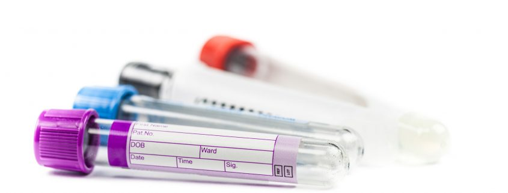
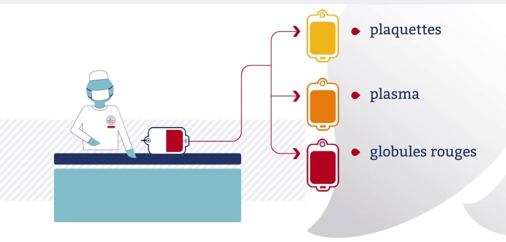
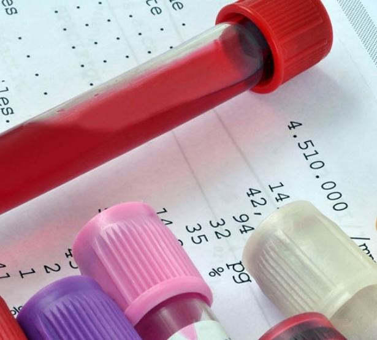
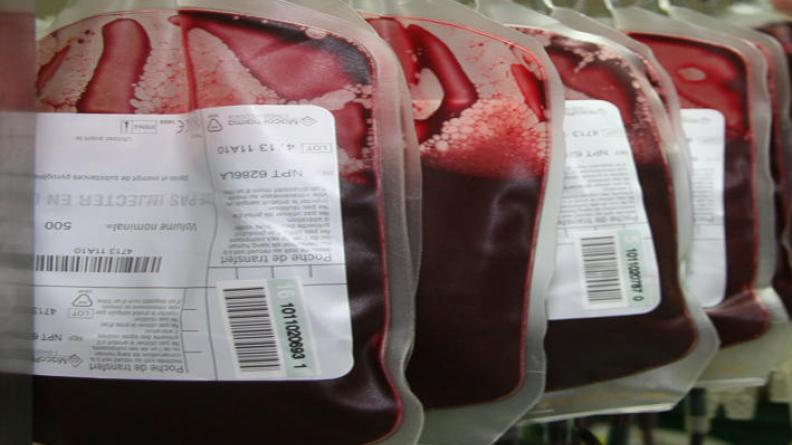
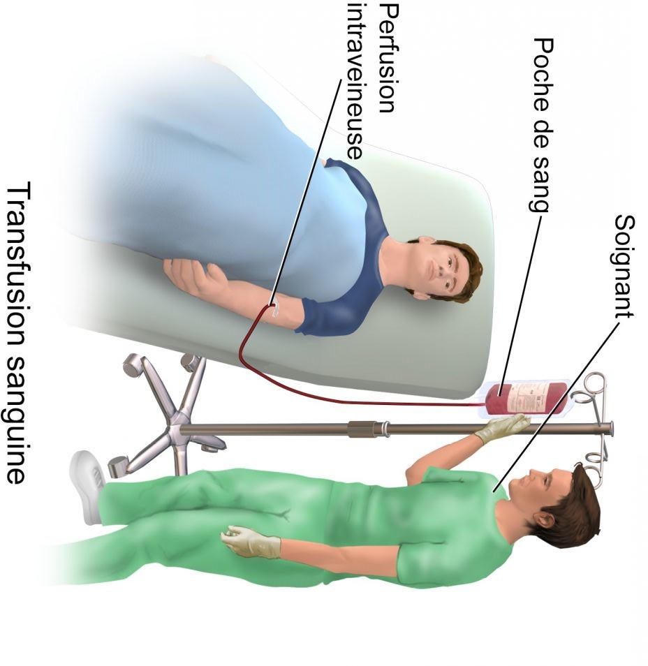

Les Etapes du don du sang
Le don du sang est une étape majeure dans le bon déroulement de la chaîne médicale. Que se passe-t-il avant et après votre prélèvement ? Comment est contrôlée la qualité du don ?
Chercher Le lieu le Plus Proche
Vous pouvez utiliser le moteurs de recherche pour trouver les centres de don de sang près de chez vous.

Prendre Rendez-vous
il est préférable de prendre rendez-vous à l'avance pour donner du sang, surtout si vous avez des contraintes de temps. Vous pouvez généralement le faire en ligne via Ce site web
Enregistrement et Questionnaire Médical
Le donneur est soumis à un questionnaire médical détaillé ayant pour but de s’assurer de sa bonne santé et de diminuer au maximum les risques potentiels pour le receveur. Le taux d’hémoglobine est vérifié avant le don, de même que le nombre de plaquettes. L’aptitude au don dépend de plusieurs paramètres, dont la pression artérielle, le pouls, le poids, la prise de médicaments et les traitements préalables au don (traitements dentaires notamment, vaccins, examens endoscopiques).
Prélèvement de l'Échantillon de Sang
Après avoir passé le questionnaire de santé et l'entretien, le personnel médical me conduira vers la zone de prélèvement. Là, ils nettoieront soigneusement la zone autour de mon bras, puis utiliseront une aiguille stérile pour prélever une petite quantité de sang dans une poche ou un tube.
Preparation
Après avoir donné votre sang, celui-ci est filtré et centrifugé pour séparer les globules rouges, les plaquettes et le plasma. Les globules rouges sont conservés 42 jours, les plaquettes 7 jours et le plasma jusqu'à 2 ans. Ensuite, les plaquettes et le plasma subissent un traitement photochimique pour éliminer tout agent pathogène, assurant ainsi la sécurité du sang transfusé.
Contrôle de la qualité du sang
Le contrôle de qualité du sang consiste à vérifier rigoureusement que le sang prélevé est sûr et exempt d'agents pathogènes. Des tests sont effectués pour détecter toute anomalie ou présence de virus ou de bactéries. Cela garantit la sécurité du donneur et du receveur. Si le sang passe ces tests, il peut être utilisé pour des transfusions ou d'autres traitements médicaux, assurant ainsi aux patients un produit de haute qualité et sans risque pour leur santé.
distribution du sang
consiste à acheminer le sang prélevé vers les hôpitaux et cliniques qui en ont besoin. Une fois que le sang a été préparé, testé et contrôlé pour garantir sa qualité et sa sécurité, il est prêt à être envoyé aux établissements de santé où il sera utilisé pour les transfusions sanguines ou d'autres procédures médicales nécessitant du sang. Cette étape est cruciale car elle assure que le sang prélevé est rapidement mis à la disposition des patients qui en ont besoin, contribuant ainsi à sauver des vies.
Transfusion
Avant la transfusion, d’ultimes contrôles sur le sang du donneur (notamment la compatibilité avec le receveur) sont réalisés.
